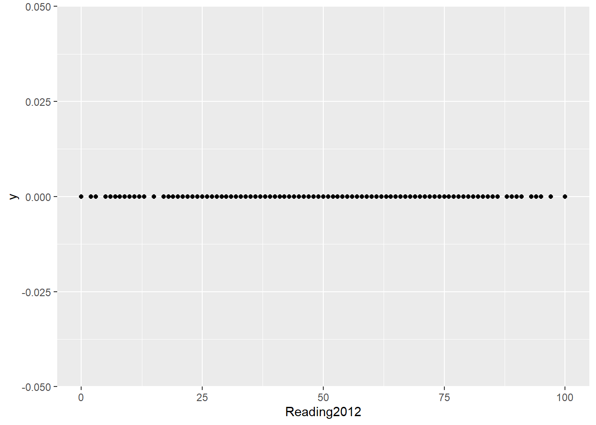

library(tidyverse) # incluye ggplot2
library(readxl) # funciones para importar xlsx
library(janitor) # funciones de limpieza
library(patchwork) #combinar gráficos de ggplot
library(ggExtra)
library(ggthemes) # nuevas temas para los
library(plotly) #gráficos interactivos # remotes::install_github("plotly/plotly")
library(tibble)
library(skimr) # reseumen numerico
library(modeest)
library(ggrepel) # añadir etiquetas a los gráficos
library(RColorBrewer) #paletas de colores
library(plotly) #graficos interactivos
library(corrplot)6 Gráficos de puntos o dispersión
6.1 Cargar librerias
Librerias necesarias que se deben haber instalado previamente con install.packages(nombre del paquete) o wn el panel Package.
6.2 Carga de datos
Se utilizará los datos de estudio de lectura y matemática de las escuelas de Miami en 2012 y 2013 por grado y Distrito llamado SchoolsMiamiDade.
Significado de las variables del dataframe SchoolsMiamiDade
Escuelas de Miami con notas promedio en las materias de lectura y matemática en los años 2012 y 2013.
SchoolName : Nombre de la Escuela
BoardDistrict : Número de Distrito donde esta la escuela
SchoolGrade : Grado al que se le aplicó la prueba
Reading2012 : puntaje de 1 a 100 en Lectura 2012
Reading2013: puntaje de 1 a 100 en Lectura 2013
ReadingDifference: diferencia entre 2013 y 2012 en lectura
Math2012: puntaje de 1 a 100 en Matemática 2012
Math2013: puntaje de 1 a 100 en Matemática 2013
MathDifference: diferencia entre 2013 y 2012 en matemática
SchoolsMiamiDade<- read.csv("data/SchoolsMiamiDade.csv")
SchoolsMiamiDade <- as_tibble(SchoolsMiamiDade)
head(SchoolsMiamiDade,5)# A tibble: 5 × 9
SchoolName BoardDistrict SchoolGrade Reading2012 Reading2013 ReadingDifference
<chr> <chr> <chr> <int> <int> <int>
1 0041 AIR … (9) A 82 80 -2
2 0070 CORA… (9) A 71 73 2
3 0071 EUGE… (5) A 69 69 0
4 0072 SUMM… (9) B 57 50 -7
5 0073 MAND… (9) C 34 32 -2
# ℹ 3 more variables: Math2012 <int>, Math2013 <int>, MathDifference <int># Verificar tipos de datos
SchoolsMiamiDade |>
glimpse()Rows: 460
Columns: 9
$ SchoolName <chr> "0041 AIR BASE ELEMENTAR", "0070 CORAL REEF MONT AC"…
$ BoardDistrict <chr> "(9)", "(9)", "(5)", "(9)", "(9)", "(2)", "(4)", "(3…
$ SchoolGrade <chr> "A", "A", "A", "B", "C", "F", "A", "A", "A", "C", "D…
$ Reading2012 <int> 82, 71, 69, 57, 34, 28, 68, 73, 68, 39, 38, 45, 53, …
$ Reading2013 <int> 80, 73, 69, 50, 32, 29, 70, 72, 68, 32, 41, 35, 51, …
$ ReadingDifference <int> -2, 2, 0, -7, -2, 1, 2, -1, 0, -7, 3, -10, -2, -1, -…
$ Math2012 <int> 71, 64, 66, 50, 38, 26, 68, 78, 73, 41, 43, 59, 56, …
$ Math2013 <int> 75, 56, 64, 54, 39, 47, 66, 77, 76, 39, 47, 50, 55, …
$ MathDifference <int> 4, -8, -2, 4, 1, 21, -2, -1, 3, -2, 4, -9, -1, -3, -…SchoolsMiamiDade$BoardDistrict <- as.factor(SchoolsMiamiDade$BoardDistrict)
SchoolsMiamiDade$SchoolGrade <- as.factor(SchoolsMiamiDade$SchoolGrade)
# ver resumen de datos
SchoolsMiamiDade |>
summary() SchoolName BoardDistrict SchoolGrade Reading2012 Reading2013
Length:460 (9) : 76 : 55 Min. : 0.00 Min. : 0.00
Class :character (2) : 75 A:204 1st Qu.: 36.00 1st Qu.:37.00
Mode :character (1) : 53 B: 85 Median : 51.00 Median :52.50
(6) : 53 C: 77 Mean : 50.98 Mean :52.08
(4) : 47 D: 31 3rd Qu.: 67.00 3rd Qu.:68.00
(8) : 47 F: 7 Max. :100.00 Max. :97.00
(Other):109 I: 1 NA's :17
ReadingDifference Math2012 Math2013 MathDifference
Min. :-17.000 Min. : 0.00 Min. : 0.00 Min. :-25.0000
1st Qu.: -2.000 1st Qu.: 41.00 1st Qu.: 40.00 1st Qu.: -5.0000
Median : 1.000 Median : 53.00 Median : 52.50 Median : -1.0000
Mean : 1.113 Mean : 53.26 Mean : 52.29 Mean : -0.7046
3rd Qu.: 4.000 3rd Qu.: 69.00 3rd Qu.: 67.00 3rd Qu.: 4.0000
Max. : 33.000 Max. :100.00 Max. :100.00 Max. : 25.0000
NA's :17 NA's :91 NA's :78 NA's :91 # pairs(SchoolsMiamiDade[, c(4:8)])
# cor(na.omit(SchoolsMiamiDade[, c(4:8)]))6.3 Gráficos de Dispersión y puntos en R
Los gráficos de dispersión (gráfico de puntos, diagrama de XY) utilizan dos variables cuantitativas para generar una colección de puntos usando coordenadas cartesianas para mostrar estos valores. Al mostrar una variable en cada eje, se puede detectar si existe una relación o correlación entre las dos variables.
6.4 Gráfico de puntos
Se pueden construir gráfico de dispersión con ggplot2 utilizando la geometría geom_point() el cual requiere de 2 variables, por lo regular cuantitativa. Sin embargo, tambien es posible generar este tipo de gráficos con una variable númerica Reading2012 y una variable BoardDistrict tipo categorica.
6.4.1 Una variable cuantitativa y una cualitativa
El gráfico muestra la posición de cada escuela según puntaje, por cada distrito Reading2012.
# grafico de punto con una sola variable
SchoolsMiamiDade |>
ggplot(aes(Reading2012,y=0))+
geom_point() Warning: Removed 17 rows containing missing values or values outside the scale range
(`geom_point()`).
#grafico de puntos con dos variables una cuantitativa y otra cualitativa
# Materia de lectura 2012 en los diferentes distritos
SchoolsMiamiDade |>
ggplot(aes(Reading2012,BoardDistrict))+
geom_point() Warning: Removed 17 rows containing missing values or values outside the scale range
(`geom_point()`).# Materia de lectura 2012 en los diferentes grados
SchoolsMiamiDade |>
ggplot(aes(Reading2012,SchoolGrade))+
geom_point() Warning: Removed 17 rows containing missing values or values outside the scale range
(`geom_point()`).6.4.2 Color en los puntos del gráfico
Para modificar el color de los puntos en el gráfico podemos utilizar la propiedad fill en la geometria de puntos.
SchoolsMiamiDade |>
ggplot(aes(Reading2012,BoardDistrict))+
geom_point(color="salmon") Warning: Removed 17 rows containing missing values or values outside the scale range
(`geom_point()`).¿Cuántas escuelas están por encima de de la nota minima de 71 (como ejemplo) en lectura y matemática 2012
Para responde esta pregunta utilizaremos la función filter(Reading2012 >= 71) para crear el filtro de las escuelas con puntaje mayor o igual a 71.
El resultado es, lectura = 87, matemática = 74.
# filtro y conteo de datos en lectura 2012
SchoolsMiamiDade |>
filter(Reading2012 >= 71) |>
nrow()[1] 87# filtro y conteo de datos en matematica 2012
SchoolsMiamiDade |>
filter(Math2012 >= 71) |>
nrow()[1] 74Representación de gráfico de dispersión a la pregunta anterior
Para colorear las escuelas según puntaje mayor a 71 podemos utilizar la misma condición del filtro Reading2012 >= 71 usado en el código anterior para buscar los valores, este filtro lo podemos colocar en la propiedad color de la geometria geom_point(aes(color=Reading2012 >= 71)) . De esta forma ggplot hará la separación de colores por nosotros.
# Gráfico con dos variables y colorear con filtro
# Lectura 2012
SchoolsMiamiDade |>
ggplot(aes(Reading2012,BoardDistrict))+
geom_point(aes(color=Reading2012 >= 71)) Warning: Removed 17 rows containing missing values or values outside the scale range
(`geom_point()`).Eliminar valor vacios en el gráfico
El gráfico anterior coloca en la leyenda los colores de los valores mayores a 71 como TRUE, los menores a 71 como FALSE, pero tambien coloca el valor de NA que representan los valores nulos. Para eliminar estos valores podemos filtrar los datos previos al uso de ggplot utilizando na.omit(Reading2012) otra opción es utilizar filter(Reading2012 !=““).
# Gráfico - se eliminan datos vacios
SchoolsMiamiDade |>
na.omit(Reading2012) |>
ggplot(aes(Reading2012,BoardDistrict))+
geom_point(aes(color=Reading2012 >= 71)) 
Eliminar leyenda
Si deseamos eliminar la leyenda de color (que no aporta nada), podemos colocar al final la capa guides(color = FALSE).
# Gráfico - se elimina leyenda de colores de datos
SchoolsMiamiDade |>
na.omit(Reading2012) |>
ggplot(aes(Reading2012,BoardDistrict))+
geom_point(aes(color=Reading2012 >= 71))+
guides(color = "none")6.5 Gráfico de dispersión
6.5.1 Dos variables numéricas
Utilizamos las variables relacionadas con los puntajes de matemática 2012 y lectura 2012, ambos datos cuantitativos. El gráfico se puede interpretar una correlación fuerte positiva (los valores de ambas variables van en aumento).
# Gráfico con dos variables numericas
SchoolsMiamiDade |>
ggplot(aes(Reading2012,Math2012))+
geom_point() Warning: Removed 91 rows containing missing values or values outside the scale range
(`geom_point()`).Modificar color, forma y tamaño en los puntos
Las formas shape del los puntos pueden ser valor de 1 a 25.
shape = 0, square
shape = 1, circle
shape = 2, triangle point up
shape = 3, plus
shape = 4, cross
shape = 5, diamond
shape = 6, triangle point down
shape = 7, square cross
shape = 8, star
shape = 9, diamond plus
shape = 10, circle plus
shape = 11, triangles up and down
shape = 12, square plus
shape = 13, circle cross
shape = 14, square and triangle down
shape = 15, filled square
shape = 16, filled circle
shape = 17, filled triangle point-up
shape = 18, filled diamond
shape = 19, solid circle
shape = 20, bullet (smaller circle)
shape = 21, filled circle blue
shape = 22, filled square blue
shape = 23, filled diamond blue
shape = 24, filled triangle point-up blue
shape = 25, filled triangle point down blue
# Gráfico con dos variables numericas y un solo color en los puntos, forma =1
SchoolsMiamiDade |>
ggplot(aes(Reading2012,Math2012))+
geom_point(color="salmon",
size=3,
shape=1)Warning: Removed 91 rows containing missing values or values outside the scale range
(`geom_point()`).# Gráfico con dos variables numericas y un solo color en los puntos, forma =5
SchoolsMiamiDade |>
ggplot(aes(Reading2012,Math2012))+
geom_point(color= "red",
size=3,
shape=5)Warning: Removed 91 rows containing missing values or values outside the scale range
(`geom_point()`).# Gráfico con dos variables numericas y un solo color en los puntos, forma =15
SchoolsMiamiDade |>
ggplot(aes(Reading2012,Math2012))+
geom_point(color="blue",
size=3,
shape=15) Warning: Removed 91 rows containing missing values or values outside the scale range
(`geom_point()`).6.5.2 Tres variables en el gráfico
En los diagramas de dispersión en ggplot, es posible añadir una tercera variable, en este caso la variable categórica BoardDistrict en la propiedad color de la geometria.
De esta forma es posible identificar las escuelas con mayor puntaje en ambas materia y a que distrito pertenecen,
# Gráfico con dos variables numéricas y colores según los distritos
SchoolsMiamiDade |>
ggplot(aes(Reading2012,Math2012))+
geom_point(aes(
color=BoardDistrict),
size=3) Warning: Removed 91 rows containing missing values or values outside the scale range
(`geom_point()`).Modificar el tamaño de los puntos y la transparencia (valores de 0 a 1)
Uno de los inconvenientes comunes en los gráficos de dispersión con muchos puntos, es el solapamiento de estos, por lo que aveces no se puede apreciar de forma correcta el número de puntos, Para ello podemos utilizar la propiedad alpha para la transparencia. Se aumenta el tamaño de los puntos a 4 a manera de ejemplo para mostrar mejor el solapamiento.
# Tamaño de los puntos fijos utilizando size = 4
SchoolsMiamiDade |>
ggplot(aes(Reading2012,Math2012))+
geom_point(aes(
color=BoardDistrict),
alpha=0.55,
size=4) Warning: Removed 91 rows containing missing values or values outside the scale range
(`geom_point()`).6.5.3 Cuatro variables
Podemos utilizar una cuarta variable en este tipo de gráfico modificando el tamañó de los puntos de forma dinámica, en este caso la variable a utilizar Reading2012 debe ser de tipo numérica. Al realizar esto se generan dos leyendas en el gráfico, uno de color y otra se size.
# Tamaño de los puntos dinámicos utilizando size = Reading2012
SchoolsMiamiDade |>
ggplot(aes(Reading2012,Math2012))+
geom_point(aes(
color=BoardDistrict,
size=Reading2012),
alpha=0.55)Warning: Removed 91 rows containing missing values or values outside the scale range
(`geom_point()`).# eliminar leyenda de size
SchoolsMiamiDade |>
ggplot(aes(Reading2012,Math2012))+
geom_point(aes(
color=BoardDistrict,
size=Reading2012),
alpha=0.55)+
guides(size="none")+
labs(color="Distrito")Warning: Removed 91 rows containing missing values or values outside the scale range
(`geom_point()`).6.5.4 Cinco variables
A manera de ejemplo (muchas variables pu7eden sobrecargar el gráfico), es posible incluir una quinta variable (puede generar carga en la visualización) en el gráfico modificando la propiedad shape en el geometria, la variable que modifca este parámetro debe ser categorica, y la diversida de formas shape será en función de la cantidad de categorías de esa variable.
# Tamaño de los puntos dinámicos y la forma del punto según el Distrito
SchoolsMiamiDade |>
ggplot(aes(Reading2012,Math2012))+
geom_point(aes(
color=BoardDistrict,
size=Reading2012,
shape=SchoolGrade),
alpha=0.45)+
guides(size="none")+
labs(color="Distrito")Warning: The shape palette can deal with a maximum of 6 discrete values because more
than 6 becomes difficult to discriminate
ℹ you have requested 7 values. Consider specifying shapes manually if you need
that many have them.Warning: Removed 92 rows containing missing values or values outside the scale range
(`geom_point()`).6.5.5 Eliminar datos vacíos
Si bien evaluar si se eliminan o no los datos nulos o vacios es un tema previo a la visualización de datos, es posible filtrar esos datos para que no causen ruido al generar el gráfico, para ello utilizamos la función filter(SchoolGrade!=” “) previo a la función ggplot. Podemos verificar la visualización con los datos de las tablas de frecuencia.
#tabla de frecuencia
# Una forma de mostrar los datos categóricos
# y el numero de valores sin categoria
table(SchoolsMiamiDade$BoardDistrict)
() (0) (1) (2) (3) (4) (5) (6) (7) (8) (9)
2 1 53 75 28 47 41 53 37 47 76 table(SchoolsMiamiDade$SchoolGrade)
A B C D F I
55 204 85 77 31 7 1 # summary(SchoolsMiamiDade)
SchoolsMiamiDade |>
filter(SchoolGrade!=" ") |>
ggplot(aes(Reading2012,Math2012))+
geom_point(aes(
color=BoardDistrict,
size=Reading2012,
shape=SchoolGrade),
alpha=0.45)+
guides(size="none")+
labs(color="Distrito")Warning: Removed 64 rows containing missing values or values outside the scale range
(`geom_point()`).Eliminar Distritos vacios o con minimo de escuelas (opcional)
Eliminar escuelas con valores () y (0) en los distritos que no aportan información al gráfico utilizando filter(BoardDistrict!=“()”). Se verifican los datos con una tabla de frecuencia.
#tabla de frecuencia de distritos
table(SchoolsMiamiDade$BoardDistrict)
() (0) (1) (2) (3) (4) (5) (6) (7) (8) (9)
2 1 53 75 28 47 41 53 37 47 76 #eliminar datos de distritos con valor ()
SchoolsMiamiDade |>
filter(BoardDistrict!="()") |>
ggplot( aes(Reading2012,Math2012))+
geom_point(aes(color=BoardDistrict),
alpha=0.55,
size=4)+
guides(color = guide_legend("Distritos"))Warning: Removed 89 rows containing missing values or values outside the scale range
(`geom_point()`).#eliminar datos de distritos con valores vacios (), (0)
SchoolsMiamiDade |>
filter(BoardDistrict!=c("()","(0)")) |>
ggplot( aes(Reading2012,Math2012))+
geom_point(aes(
color=BoardDistrict),
alpha=0.55,
size=4)+
guides(color = guide_legend("Distritos"))Warning: Removed 89 rows containing missing values or values outside the scale range
(`geom_point()`).6.6 Énfasis en los gráficos
6.6.1 Enfasis colores en puntos
En un gráfico de dispersión también podemos hacer énfasis en una categoría en particular,asignando colores de forma manual. En este ejemplo contabilizamso el número de categorías de la variable BoardDistrict que son 11 eliminando las categorias “()”,“(0)”, por lo que serían 9 categorías a utilizar en el gráfico, por lo tanto deberíamos crear nueve colores, uno por cada categoría, almacenados en el vector colores y modificando solo el color de la posición del distrito de interés.
# Calcular Cantidad de categorias
table(SchoolsMiamiDade$BoardDistrict) |>
length()[1] 11#El número de colores esta asociado al número de categorias
# En el caso de Región son 9 categorias
colores <- c("#636363","#636363", "#636363", "#636363" ,"#636363" ,
"#636363" ,"#636363","#636363", "#636363")
# Modificar color del distrito en la posición 3
colores[3] <- "#F26419"
SchoolsMiamiDade |>
filter(BoardDistrict!=c("()","(0)")) |>
ggplot(aes(Reading2012,Math2012))+
geom_point(aes(
color=BoardDistrict),
alpha=0.5,
size=4)+
guides(size="none")+
labs(color="Distrito")+
scale_color_manual(values = colores)Warning: Removed 89 rows containing missing values or values outside the scale range
(`geom_point()`).6.6.2 Enfasis transparencia en puntos
Otra forma de hacer énfasis en el gráfico es a través de la transparencia alpha, para ello debemos crear un vector transparenciacon los valores del valor alpha de cada valor de la variable BoardDistrict y utilizando scale_alpha_manual(). Es importante resaltar que la propiedad alfa debe estar en la estética aes() ya que sus datos pertencerán a la variable BoardDistrict.
# Calcular Cantidad de categorias
table(SchoolsMiamiDade$BoardDistrict) |>
length()[1] 11# El número de colores esta asociado al número de categorias
# En el caso de Región son 9 categorias
colores <- c("#636363","#636363", "#636363", "#636363" ,"#636363" ,
"#636363" ,"#636363","#636363", "#636363")
colores[3] <- "#F26419"
# valores de trasnparencia
transparencia <- sample(0.2,9, replace = TRUE)
transparencia[3] <- 1.0
SchoolsMiamiDade |>
filter(BoardDistrict!=c("()","(0)")) |>
ggplot(aes(Reading2012,Math2012))+
geom_point(aes(
color=BoardDistrict,
alpha=BoardDistrict),
size=4)+
guides(size="none")+
labs(color="Distrito")+
scale_color_manual(values = colores)+
scale_alpha_manual(values = transparencia)Warning: Removed 89 rows containing missing values or values outside the scale range
(`geom_point()`).6.6.3 Etiquetas en los puntos
Para mostarr las etiquetas o texto en los puntos del gráfico debemos utilizar la geoametria geom_text() y el valor de la etiqueta a utilizar label=variable.
# El número de colores esta asociado al número de categorias
# En el caso de Región son 9 categorias
colores <- c("#636363","#636363", "#636363", "#636363" ,"#636363" ,
"#636363" ,"#636363","#636363", "#636363")
colores[3] <- "#F26419"
# valores de trasnparencia
transparencia <- sample(0.2,9, replace = TRUE)
transparencia[3] <- 1.0
SchoolsMiamiDade |>
filter(BoardDistrict!=c("()","(0)")) |>
ggplot(aes(Reading2012,Math2012))+
geom_point(aes(
color=BoardDistrict,
alpha=BoardDistrict),
size=4)+
guides(size="none",
alpha ="none")+
labs(color="Distrito")+
scale_color_manual(values = colores)+
scale_alpha_manual(values = transparencia) +
geom_text(aes(
label=SchoolName),
size=2.5,
hjust=-0.1,
vjust=0.1,
color="#252b2b"
)Warning: Removed 89 rows containing missing values or values outside the scale range
(`geom_point()`).Warning: Removed 89 rows containing missing values or values outside the scale range
(`geom_text()`).6.6.4 Énfasis en el texto
POdemos también hacer énfasis en las etiquetas de texto, colocando solo las etiquetas de los punto que queremos, para ello es necesario crear una variable que contenga esos datos. etiquetas <- (ifelse(SchoolsMiamiDade\(BoardDistrict=="(3)", SchoolsMiamiDade\)SchoolName,” “))**
SchoolsMiamiDade<- etiquetas
Si el distrito es”(3)” asignar a la etiqueta el nombre de la escuela de la variable SchoolName*** , sino le asigna espacio en blanco a la etiqueta. Almacenamos este vector al tibble SchoolsMiamiDade**.
# El número de colores esta asociado al número de categorias
# En el caso de Región son 9 categorias
colores <- c("#636363","#636363", "#636363", "#636363" ,"#636363" ,
"#636363" ,"#636363","#636363", "#636363")
colores[3] <- "#F26419"
# valores de trasnparencia
transparencia <- sample(0.2,9, replace = TRUE)
transparencia[3] <- 1.0
#valores de etiqueta
# SI el distrito es "(3)" asignar a la etiqueta el nombre de la escuela
# sino le asigna espacio en blanco a la etiqueta
etiquetas <- (ifelse(SchoolsMiamiDade$BoardDistrict=="(3)",
SchoolsMiamiDade$SchoolName," "))
SchoolsMiamiDade$label_ <- etiquetas
SchoolsMiamiDade |>
filter(BoardDistrict!=c("()","(0)")) |>
ggplot(aes(Reading2012,Math2012))+
geom_point(aes(
color=BoardDistrict,
alpha=BoardDistrict),
size=4)+
guides(size="none",
alpha ="none")+
labs(color="Distrito")+
scale_color_manual(values = colores)+
scale_alpha_manual(values = transparencia) +
geom_text(aes(
label=label_),
size=2.5,
hjust=-0.1,
vjust=0.1,
color="#252b2b"
)Warning: Removed 89 rows containing missing values or values outside the scale range
(`geom_point()`).Warning: Removed 89 rows containing missing values or values outside the scale range
(`geom_text()`).Recortar texto de la etiqueta que contine los nombres de las escuelas
Para recortar el nombre de las etiquetas, podemos utilizar el siguiente código str_sub(etiquetas,1,4), este selecciona de cada etiqueta la posición 1 al 4 de cada texto y luego se lo asigna a la variable label del dataframe.
# El número de colores esta asociado al número de categorias
# En el caso de Región son 9 categorias
colores <- c("#636363","#636363", "#636363", "#636363" ,"#636363" ,
"#636363" ,"#636363","#636363", "#636363")
colores[3] <- "#F26419"
# valores de trasnparencia
transparencia <- sample(0.2,9, replace = TRUE)
transparencia[3] <- 1.0
#valores de etiqueta
# SI el distrito es "(3)" asignar a la etiqueta el nombre de la escuela
# sino le asigna espacio en blanco a la etiqueta
etiquetas <- (ifelse(SchoolsMiamiDade$BoardDistrict=="(3)",
SchoolsMiamiDade$SchoolName," "))
# Selecciona solo los primeros cuatros digitos de la etiqueta
# que contiene los nombres
SchoolsMiamiDade$label_ <- str_sub(etiquetas,1,4)
SchoolsMiamiDade |>
filter(BoardDistrict!=c("()","(0)")) |>
ggplot(aes(Reading2012,Math2012))+
geom_point(aes(
color=BoardDistrict,
alpha=BoardDistrict),
size=4)+
guides(size="none",
alpha ="none")+
labs(color="Distrito")+
scale_color_manual(values = colores)+
scale_alpha_manual(values = transparencia) +
geom_text(aes(
label=label_),
size=2.5,
hjust=-0.15,
vjust=0.1,
color="#252b2b"
)Warning: Removed 89 rows containing missing values or values outside the scale range
(`geom_point()`).Warning: Removed 89 rows containing missing values or values outside the scale range
(`geom_text()`).6.7 Facetas
6.7.1 Facetas para clasificar gráficos
Podemos utilizar facetas para separar los gráficos de dispersión por una variable categórica, através de las propiedades facet_wrap() o facet_grid() , aunque funcionan para lo mismo la forma de dsitribución de los gráficos utilizando estas funciones es diferente.
SchoolsMiamiDade |>
filter(BoardDistrict!=c("()","(0)")) |>
ggplot(aes(Reading2012,Math2012))+
geom_point(aes(
color=BoardDistrict),
alpha=0.55,
size=4) +
labs(title="Escuelas con puntajes de lectura en Matemática y Lectura por Distrito",
subtitle="Datos de USA - 2012") +
ylab("Notas Matemática") +
xlab("Notas Lectura")+
guides(color = guide_legend("Distritos")) +
facet_wrap(~BoardDistrict)Warning: Removed 89 rows containing missing values or values outside the scale range
(`geom_point()`).Uso de la función facet_grid()
SchoolsMiamiDade |>
filter(BoardDistrict!=c("()","(0)")) |>
ggplot(aes(Reading2012,Math2012))+
geom_point(aes(
color=BoardDistrict),
alpha=0.55,
size=4) +
labs(title="Escuelas con puntajes de lectura en Matemática y Lectura por Distrito",
subtitle="Datos de USA - 2012") +
ylab("Notas Matemática") +
xlab("Notas Lectura")+
guides(color = guide_legend("Distritos")) +
facet_grid(BoardDistrict~.)Warning: Removed 89 rows containing missing values or values outside the scale range
(`geom_point()`).6.7.2 Evaluación de las variables de lectura en los años 2012 y 2013
Ambos datos cuantitativos Reading2013,Reading2012.
SchoolsMiamiDade |>
filter(BoardDistrict!=c("()","(0)")) |>
ggplot(aes(Reading2013,Reading2012))+
geom_point(size=2, aes(color=BoardDistrict), alpha=0.55) +
labs(title="Escuelas con puntajes de lectura por Distrito",
subtitle="Datos de USA - 2012") +
ylab("notas de Lectura 2012") + xlab("Notas de Lectura 2013")+
guides(color = guide_legend("Distritos"))Warning: Removed 15 rows containing missing values or values outside the scale range
(`geom_point()`).6.8 Recta de regresión lineal
Se puede crear una recta de regresión lineal a través de la geometría geom_smooth() y sus métodos geom_smooth(method=‘lm’) : - lm modelo lineal - glm - gam - loess ajuste de regresión local suave
#metodol lm
SchoolsMiamiDade |>
filter(BoardDistrict!=c("()","(0)")) |>
ggplot(aes(Reading2012,Reading2013))+
geom_point(aes(color=BoardDistrict)) +
labs(title="Escuelas con puntajes de lectura por Distrito y diferencia de puntos por año", subtitle="Datos de USA - 2012") +
ylab("Puntos Lectura 2013") + xlab("Puntos Lectura 2012") +
geom_smooth(method='lm', se=TRUE) +
facet_wrap(BoardDistrict~.)`geom_smooth()` using formula = 'y ~ x'Warning: Removed 15 rows containing non-finite outside the scale range
(`stat_smooth()`).Warning: Removed 15 rows containing missing values or values outside the scale range
(`geom_point()`).6.9 Práctica
Crear gráfico de puntos utilizando los datos INEC-morbilidad-2023-10-14.csv. Es necesario filtrar los datos seleccionando solo: Region=“PANAMA METRO”
Genero=“M”
Edad=“15 a 19 años” o igual a Edad=“20 a 24 años”
Se debe usar como en los colores la variable Causas y hacer énfasis en los colores en la **Causa=Candidiasis de la vulva y de la vagina (n77.1*). El valor de alpha=035 (opcional) y la faceta se debe hacer utilizando la variable edad**.
Gráfico de resultado:
inec <- read.csv("data/INEC-morbilidad-2023-10-14.csv")
inec <- as_tibble(inec)
# table(inec$Region)
# #
# inec |>
# glimpse()
inec_4 <- inec |>
filter(Region=="PANAMA METRO" &
Genero=="M" &
(Edad=="15 a 19 años" | Edad=="20 a 24 años"))
inec_4$ano <- as.factor(inec_4$ano)
# El número de colores esta asociado al número de categorias
# En el caso de Región son 9 categorias
colores <- c("#636363","#636363", "#636363", "#636363" ,"#636363" ,
"#636363" ,"#636363","#636363", "#636363" , "#636363",
"#636363" ,"#636363","#636363", "#636363" , "#636363")
colores[4] <- "#F26419" #Candidiasis de la vulva y de la vagina (n77.1*)
# colores[4] <- "#F26419"
# table(inec_4$Edad)
# table(inec_4$Causas)
#grafico
inec_4 |>
ggplot(aes(ano, Casos))+
geom_point(aes(
color=Causas,
alpha=0.5
),
size=3.0)+
guides(color="none",
alpha="none")+
labs(title="Causas de Mortalidad en Panamá Metro",
subtitle = "Candidiasis de la vulva y de la vagina (n77.1*)")+
scale_color_manual(values = colores)+
theme_gray()+
facet_grid(Edad~.) # theme(legend.position="bottom") +